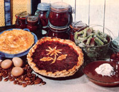

This flavorful perennial, packed with Vitamin A, lends itself to some remarkably good eating.
Although rhubarb (Rheum rhaponticum) is actually a vegetable, it's generally used as a fruit. And, unlike most such sweet edibles, this plant is-in many parts of North America-kitchen-ready from late spring well into high summer. (Furthermore, given the untimely frosts that hit a lot of us in 1982, the outlook for a good harvest-and thus low prices-for many other pie-makings is gloomy indeed. Cold-hardy rhubarb, however, is likely to be in good shape in your own plot and a bargain on the grocers' shelves!)
If you're lucky enough to be able to walk out and gather the tart stalks from a backyard patch (don't take any under an inch wide and ten inches long), remember not to cut them from the plant. Instead, grasp a stalk at its base and pull, with a slight twisting motion, while gently pressing down on any tiny new growth to prevent its being plucked up along with the mature stem. Then, because rhubarb leaves contain very poisonous oxalic acid, cut them off . . . together with an inch of stalk.
Once you get your harvest to the kitchen, remember that though all the traditional dishes given here call for sugar, you can-if you prefer-simply substitute equal amounts of honey up to one cup. When larger quantities are called for, reduce the total amount of any other liquids in the recipe by 1/4 cup per cup of honey used. (We wouldn't, however, recommend the use of that particular sugar substitute in the conserve recipe, as the citrus juices called for are needed for flavoring and shouldn't be reduced. You might want to try a date sugar, though.) Also, lower the oven temperature 20° to 30° to prevent over-browning sensitive honey-sweetened baked goods.
GRANDMOTHER'S RHUBARB PIE
Rhubarb-used either alone or in combination with such other fruits as apples, strawberries, or pineapple-makes so delicious a pie that it's known as "pieplant".
To make the basic dessert, combine 4 cups of inch-long rhubarb chunks, 1-1/2 cups of sugar, 1/3 cup of flour, a dash of salt, and 1 tablespoon of butter . . . put the mixture in a pastry-lined pan . . . and cover the filling with a top crust (slash it in a couple of places to let the steam escape). Bake the pie for about 45 minutes at 425 °F.
RHUBARB CONSERVE
Squeeze the juice from 3 oranges and 1 lemon, then grind up the rind of one orange. Combine the liquid and peel with 10 cups of small rhubarb pieces, 8 cups of sugar, and 1-1/2 cups of seedless raisins. Cook the mixture slowly, stirring often, until it thickens. Then add 1 cup of chopped nuts . . . remove the pan from the heat . . . pour the conserve into 6 hot, sterilized pint jars or glasses . . . and seal.
OLD-TIME RHUBARB COBBLER
Preheat the oven to 450°F, then put 4 cups of finely chopped rhubarb into the bottom of a greased casserole dish and sprinkle 1 cup of sugar over it. Top the dessert with a batter made from 1 cup of sour milk, 1/4 cup of butter, 2 eggs, 1/4 teaspoon of soda, 2 cups of flour, and 1/4 teaspoon of salt. Put the dish in the hot oven for 10 minutes . . . then reduce the heat to 350°F, bake the cobbler another 30 minutes, and serve it warm, crowned with a dollop of whipped cream.
RHUBARB CRISP
Add 2 tablespoons of flour, 3/4 cup of sugar, and 1 beaten egg to 3 cups of cut rhubarb . . . and pour it all into a greased baking dish. Now, combine 4 tablespoons of butter, 1/3 cup of brown sugar (packed), and 2/3 cup of flour. When the mixture is crumbly, sprinkle it evenly over the rhubarb. Bake the crisp at 350° for 40 minutes, or until the rhubarb is tender.
RHUBARB SOUP
First, cook 4 cups of cut-up stalks with 4 cups of water until the pieces are tender. Now, use a strainer or electric blender to puree the stewed rhubarb. Add 1 tablespoon of cornstarch and 3/4 cup of sugar, and simmer the sauce a few minutes . . . until it thickens a bit and the sugar is dissolved. Cool the soup and serve it chilled, with a dab of whipped cream on top.
|
 |
|
|